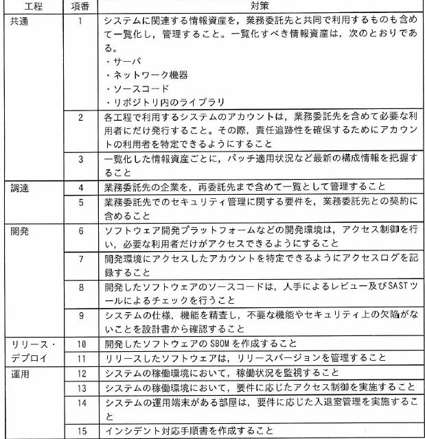
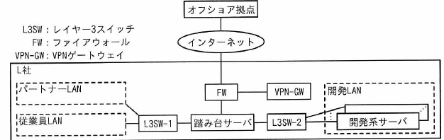
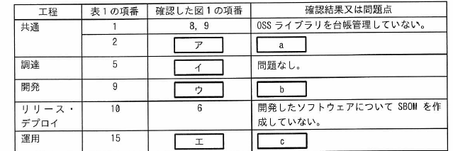
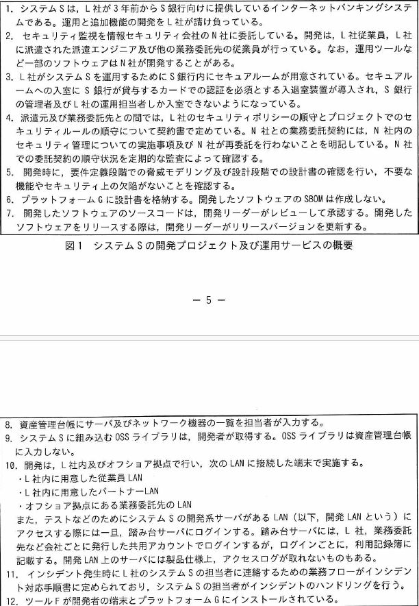
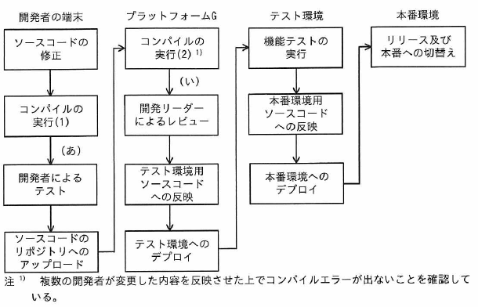

サプライチェーンのリスク対策に関する次の記述を読んで，設問に答えよ。
L社は，金融業向けにシステムを開発している従業員1,000名の企業である。L社のシステム開発プロジェクトでは，プラットフォームGというソフトウェア開発プラットフォームを利用している。プラットフォームGの機能には，ソースコード及び開発ドキュメントのバージョンを管理する機能，CI/CDパイプラインの管理機能，開発対象のSBOM作成機能がある。CI/CDパイプラインの管理機能を利用してテストやリリースの自動実行が可能である。開発対象のSBOM作成機能はプラットフォームG上のリポジトリサーバ内のソースコード及びライブラリをシステム構成要素として一覧化する。開発対象のSBOM作成機能は現状では特に利用していない。また，L社が採用しているSASTツール（以下，ツールFという）は，プラットフォームG上のリポジトリサーバや開発者の端末にインストールして利用するツールであり，コンパイルエラーが解消されたソースコードに対してだけ正常な検査が可能である。プラットフォームGのCI/CDパイプラインの管理機能で，ツールFでのチェックを自動的に行うようなワークフローを構成することができる。
近年，業務委託先でのセキュリティ侵害に起因する情報セキュリティインシデントが大きく報道されるなど外部環境が変化し，L社経営陣もサプライチェーンリスク対策の強化を考えるようになった。経営陣の指示で，情報セキュリティ担当のBさんは，サプライチェーンリスク対策を強化したセキュリティガイドライン（以下，ガイドラインという）を作成し，全てのシステム開発プロジェクト及び運用サービスを点検することになった。Bさんは，L社が契約しているセキュリティコンサルタントで情報処理安全確保支援士（登録セキスペ）のD氏にガイドラインの作成について相談することにした。
〔ガイドラインの作成〕
次は，ガイドラインの作成についてのBさんとD氏の会話である。
Bさん：ガイドラインはどのような構成がよいでしょうか。
D氏 ：システムライフサイクルの工程に合わせるのがよいでしょう。L社のシステム開発業務を踏まえて，調達，開発，リリース・デプロイ，運用の工程に分類し，さらに全ての工程で共通するような項目も抜き出して記載しましょう。
Bさんは，ガイドライン案を表1のように作成した。

表1 ガイドライン案（抜粋）
次は，ガイドライン案についてのBさんとD氏の会話である。
Bさん：
①1セキュリティ・バイ・デザインの考え方を一部取り入れました。その他，留意すべき点などはありますか。
D氏 ：項番5には，
②業務委託先が再委託を行う場合に備えて，L社と業務委託先との間の契約書に明記すべき事項を具体的に示しておくとよいでしょう。
Bさんが修正したガイドライン案を経営陣に報告したところ，過去に外部ベンダーでのセキュリティ侵害に起因してL社でインシデントが何度か発生したことがあったので，それらのインシデントに対するガイドライン案の有効性を評価するように指示があった。
〔過去のインシデントの確認〕
Bさんは，過去のインシデントに対するガイドライン案の有効性を評価することにした。次は，1件目のインシデントについてのD氏とBさんの会話である。
D氏 ：はじめに，インシデントの内容を確認しておきましょう。
Bさん：L社が開発し，運用していたシステム（以下，システムQという）では，古いWebブラウザをサポートするためのJavaScript（以下，スクリプトPという）を利用していました。スクリプトPは，当時広く使われていたT社製のものです。スクリプトPは，T社が運営するサーバ（以下，サーバTという）に配置され，システムQにアクセスしたWebブラウザがスクリプトPを都度読み込むようにシステムQは構成されていました。ある日，サーバTが乗っ取られてしまい，スクリプトPが改ざんされたことによって，システムQへの利用者のアクセスが悪意のあるWebサイトにリダイレクトされてしまいました。
D氏 ：発見の経緯を教えてください。
Bさん：システムQの利用者からの問合せで気付き，対策を実施しました。当時の情報セキュリティ担当は，サーバTが侵害されたというニュースは知っていましたが，システムQへのアクセスが影響を受けることを把握していませんでした。
D氏 ：他社の発表によると，
③スクリプトPを利用していたシステムでもスクリプトPの配置方法が違えば，影響を受けなかったようですね。
Bさん：はい。違う配置方法にするという対策もありました。しかし，Webブラウザ開発元での古いWebブラウザの公式サポートが終了していたことから，当社の対策としては，
④システムQのソースコードに変更を加えて，古いWebブラウザのサポートを終了しました。
D氏 ：1件目のインシデントについてはおおむね理解できました。
Bさん：案の項番10が，1件目のインシデントを未然に防ぐために有効ではありませんか。
D氏 ：いいえ，開発対象のSBOM作成機能でSBOMを作成していたとしても，スクリプトPはSBOMに含まれないので，インシデントは防げなかったでしょう。
Bさんは，
⑤SBOM以外の手段で，システムが利用している外部のスクリプトを把握できるよう，案の項目を一つ修正した。D氏とともに，そのほかの過去のインシデントについても案を評価したところ，案は有効であると確認できたので，経営陣に報告して承認を得た。
〔ガイドラインを用いた点検の実施〕
ガイドラインを用いて，現在進行中の全てのシステム開発プロジェクト及び運用サービスを点検することになった。最初の点検対象は，システムSの開発プロジェクト及び運用サービスである。Bさんがプロジェクト計画書，運用計画書などからまとめたシステムSの開発プロジェクト及び運用サービスの概要を図1に，開発環境の構成図を図2に示す。

図1 システムSの開発プロジェクト及び運用サービスの概要

図2 システムSの開発環境の構成図（抜粋）
Bさんは，システムSの担当者へのヒアリング前に論点を整理しておこうと考え，表1の各項番について，図1に基づき，対策状況を確認した。結果は表2のとおりである。

表2 システムSの事前確認結果（抜粋）
Bさんは，システムSの担当者であるCさんにヒアリングを行った。
〔SBOMについての確認〕
次は，表1の項番10についてのCさんとBさんの会話である。
Cさん：システムSのソフトウェア構成は設計書で把握できると考えていますが，SBOMの作成も必要でしょうか。
Bさん：SBOMを利用すると，
⑥将来，脆弱性管理がしやすくなります。プラットフォームGで作成することができます。
Cさん：なるほど。それでは，SBOMの作成を検討します。
〔開発工程のセキュリティ対策についての確認〕
Bさんは，表1の項番7，8について確認した。次は，そのときのBさんとCさんの会話である。
Bさん：表1の項番7の対策は実施できていますか。
Cさん：オフショア拠点から開発LANへのアクセスについてはVPN-GWでアクセスログを取得できているものの，社内からのアクセスについては取得できていません。
Bさん：アクセスログは図2中の
dで取得するのがよいでしょう。
Cさん：分かりました。
Bさん：表1の項番8の対策はどのようにしていますか。
Cさん：現在はソースコードの変更内容を開発リーダーがレビューしています。
Bさん：開発リーダーによるレビューに加えて，ツールFでチェックするのがよいでしょう。
Cさん：開発フローのどこでツールFを実行するのがよいでしょうか。
Bさん：ツールFの特性を踏まえると，図3のシステムSの開発フロー中の（あ）又は（い）で実行するのがよいと考えられます。
⑦それぞれ利点が異なります。

図3 システムSの開発フロー
ガイドラインを用いた点検の後，L社のサプライチェーンリスク対策は強化された。